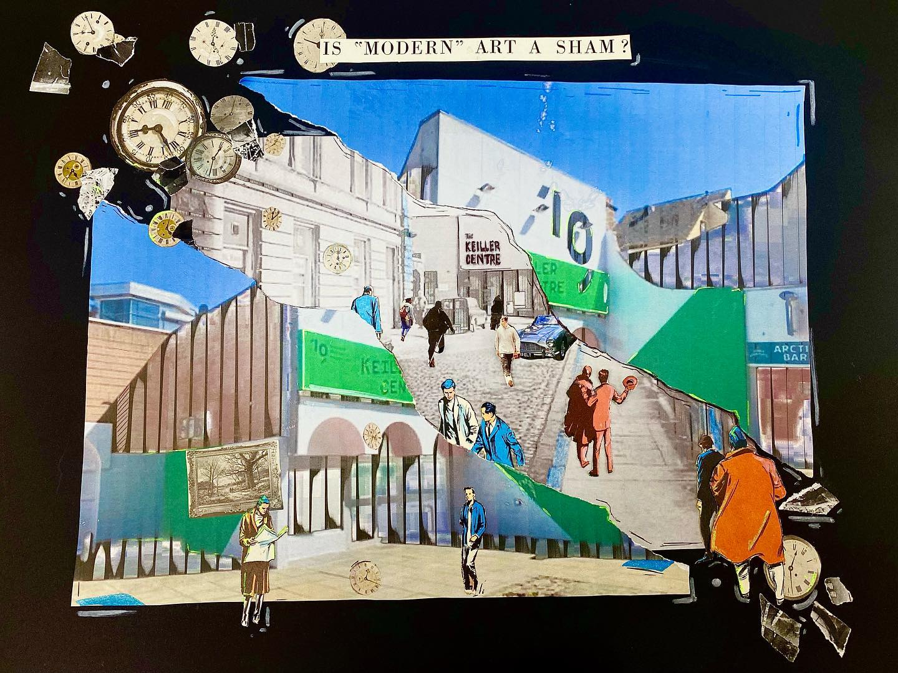
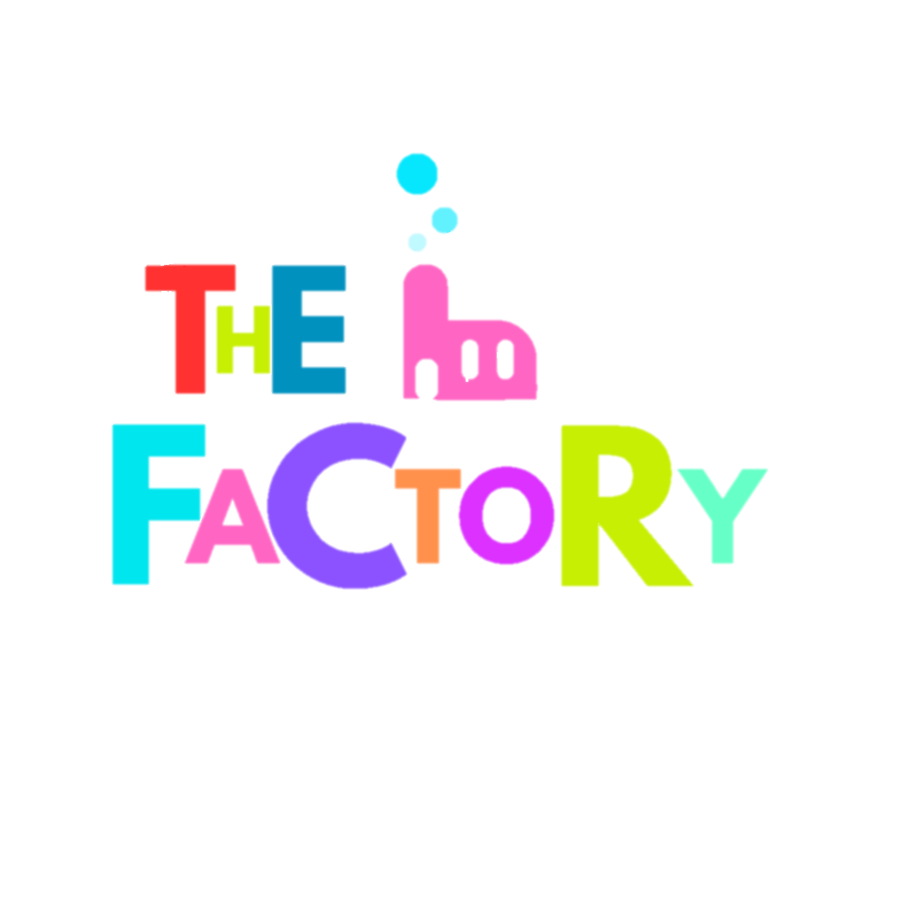

The Keiller Centre is much more than just a shopping centre, it’s a place where people can express themselves freely. It holds fond memories for many Dundonians and others from across the region and offers a sense of place whilst modelling a new, sustainable way of living, working and caring. The Keiller Centre aims to reimagine the High Street and strives to become the creative heart of the city.

We are The Factory, a group of young artists/designers who are expressing our artistic abilities and preparing for our upcoming exhibition for our artist Wiktoria Sibilla. We call ourselves "The Factory" as a commemoration to the past Keiller Centre which was once a sweetie factory. This title was also influenced due to our inspiration from Andy Warhol. He once had a famous studio from 1963-1987 in New York which was also named "The Factory", known for being a hangout spot and a hotspot for many parties.
